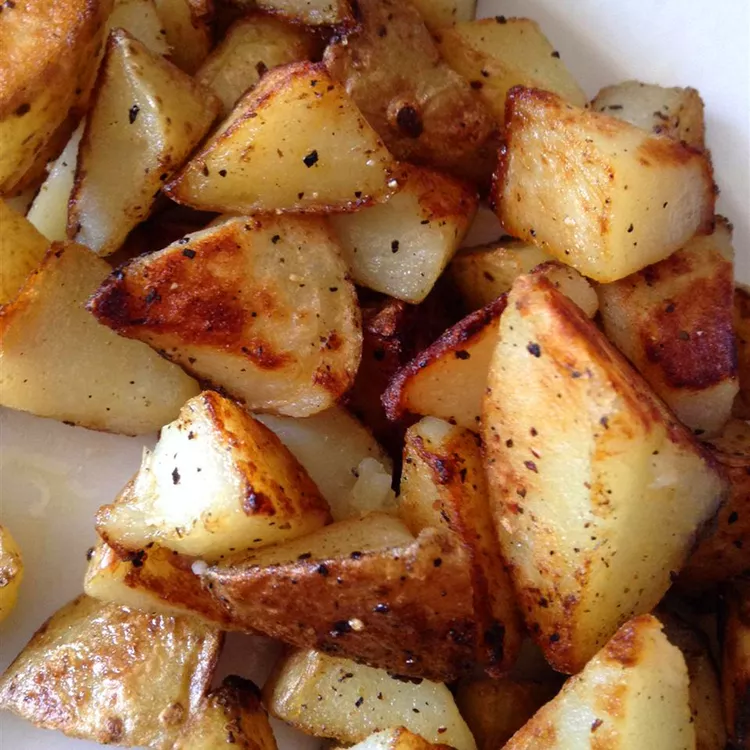

Home Fries

- 3 medium russet potatoes, cubed
- 3 tablespoons butter or margarine
- salt and ground black pepper to taste
- Rinse potato cubes with cold water and drain well.
- Melt butter in a large skillet over medium heat. Place potatoes in the skillet and season with salt and pepper; mix well. Cover and cook for 10 minutes.
- Remove the lid and cook, turning frequently, until brown and crisp on all sides, about 10 more minutes.